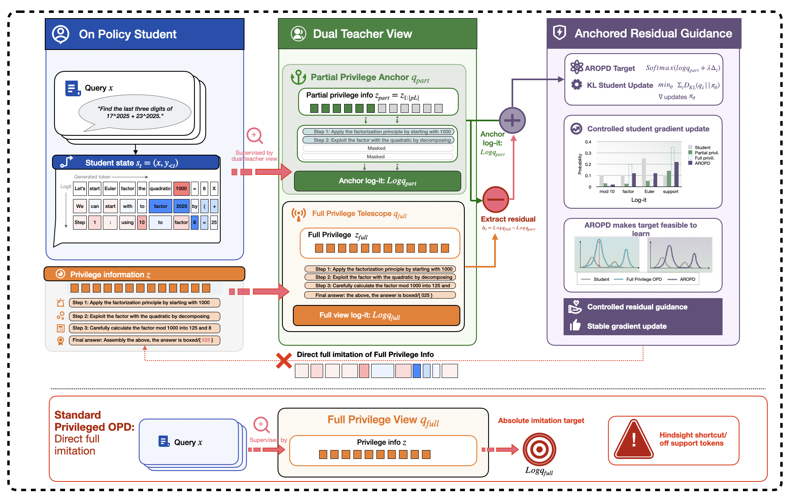
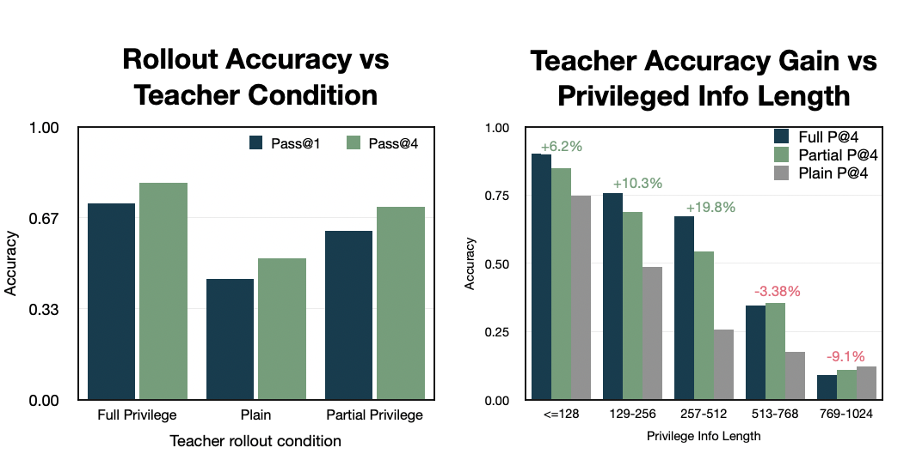
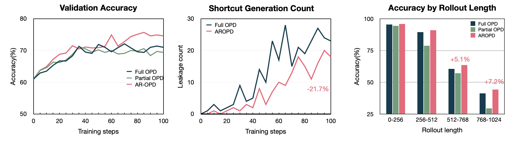

Privileged On-Policy Distillation
Beyond Absolute Imitation: Anchored Residual Guidance
AR-OPD treats privileged information as a target-design problem. Instead of copying a full-view oracle distribution directly, it anchors supervision to a locally reachable partial view and transfers the remaining foresight as a controlled residual.
Method
Full-view oracle signals are useful, but unsafe as absolute targets.
A full privileged teacher can assign high probability to tokens justified by future information that the student cannot access at the current prefix. AR-OPD separates the target into a compatible anchor and a bounded full-minus-partial residual.

Main Results
Anchored residual guidance improves across seven benchmarks.
Best average score across math, code, science, and medical QA benchmarks.
MATH500 and AMC23, exceeding Full OPD by 3.6 and 2.5 points.
Average gain over Partial OPD, showing that controlled full-view residuals add useful guidance.
Target Reliability
Mechanism evidence matches the performance pattern.
Diagnostics show that full-view targets create larger teacher-student disagreement near rollout tails, while AR-OPD reduces shortcut events and is strongest on longer trajectories.
- Support mismatch rises late in long rollouts.
- Full-view reliability degrades with privileged-context length.
- AR-OPD reduces shortcut-like privileged-information leakage.


Resources
Paper, code, and citation.
BibTeX
@misc{aropd2026,
title = {Beyond Absolute Imitation: Anchored Residual Guidance for Privileged On-Policy Distillation},
author = {Wenhao Zhu},
year = {2026},
note = {Preprint}
}